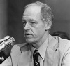

E. Howard Hunt (1918–2007) Watergate Skandalı’nın merkezinde yer alan isimlerden biriydi. 1972 yılında Demokrat Parti binasına zorla girmeye çalışan ekibi organize eden Beyaz Saray görevlisi olarak ünlendi. Hırsızların yakalanması ve Hunt’la olan bağlantısının açığa çıkması başkan Richard M. Nixon’un (1913–1994) 1974 yılında istifası ile sonuçlanan bir dizi olayı da beraberinde getirdi. Hunt’un arkadaşı muhafazakar yazar William F. Buckley’nin (1925–2008) sözleriyle “Nixon’ın istifasında diğer pek çok insandan çok daha fazla sorumluluğu vardı.”
Everette Howard Hunt Jr., New York eyaletinin kuzeyinde dünyaya geldi. Brown Üniversitesi’nde eğitim gördü. II. Dünya Savaşı’nda donanmaya katıldı. Stratejik Hizmetler Ofisi’nde görev yaptı. Bu kurum daha sonra CIA’e dönüşecekti. Savaştan sonra da ajanlığa devam etti. 1954 yılında Guatemala’nın demokratik bir seçimle iş başına gelmiş hükümetine karşı yapılan CIA destekli darbenin arkasındaki isimlerden biriydi.

1940’lardan itibaren takma isimlerle casusluk romanları yayınlamaya başladı. İlk çalışmalarından çoğu beğeni topladı. Kısa hikayeleri Cosmopolitan ve New Yorker’da yayınlandı.
Koyu bir anti komünist olan Hunt, 1961 yılında “Domuzlar Körfezi Çıkarması”na katıldı. Operasyonun başarısızlığının ardından CIA’in gözünden düştü. Hunt ise tam aksine John F. Kennedy’nin (1917–1963) Küba’da rejim değişikliği için yeterince uğraşmadığını düşünüyordu. 1970 yılında CIA’den ayrıldı.
Nixon tarafından Beyaz Saray’a güvenlik danışmanı olarak atandı. Nixon’un politik düşmanlarına karşı casusluk faaliyetleri yürütmesi için günlüğü 100 dolar maaşla göreve başladı. 1972 seçimleri yaklaşırken Hunt beş adam kiraladı. Adamlar Watergate kompleksine girip Demokrat Parti’nin telefon hattına dinleme cihazları yerleştirecekti. Adamlar yakalandığında içlerinden birinin adres defterinde Hunt’ın isminin olduğu görüldü.
Hunt, olaydaki rolü nedeniyle otuz üç ayını cezaevinde geçirdi. Serbest kalınca casusluk romanları yazmaya devam etti. Watergate’te yaptıklarını savundu. Söylediğine göre tek pişmanlığı Domuzlar Körfezi Çıkarması’nın başarısızlığıydı. Seksen sekiz yaşında Miami’de öldü.
Ek Bilgiler
1- Hunt farklı isimlerle seksenden fazla roman yayınladı. Takma isimlerinden bazıları Gordon Davis, John Baxter ve David St. John idi.
2- Watergate olayında kiralanan beş adamdan biri de Frank Sturgis’di (1924–1993). Sturgis, Castro karşıtı eski bir ajandı. Hunt’un başarılı kitaplarından biri olan “Bimini Run”daki (1949) başkahramanın ismi onunkiyle neredeyse aynıydı.
3- Herhangi bir kanıt bulunmamasına rağmen Hunt “Kennedy Suikasti” ile ilişkilendirilmiştir. 1985 yılında bir gazeteyi bu iddiaları yüzüden mahkemeye verdi, ancak jüri davasını haksız buldu.